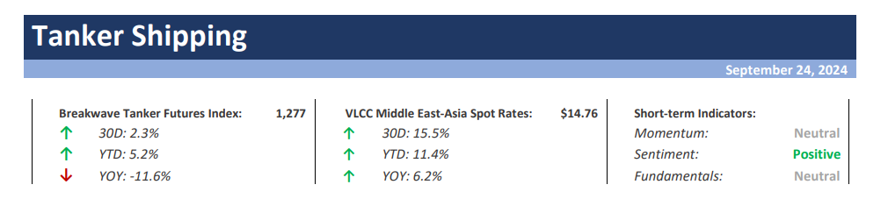

Welcome toBreakwave AdvisorsWeekend Read
As we conclude the workweek and head into the weekend, take a moment to review the key articles from this week, including those you've highlighted.All segments stayed out of the red,We can’t fight the Fed. We can’t listen to it either. Welcome to the Old Normal,Ballast speed Dry All vessel classes Vs Capesizeand more.
Breakwave Tanker Report
VLCC Market Strengthens on the Back of Increasing Inquiry as Hopes for a Winter Recovery Resurface– The recovery of the VLCC (Very Large Crude Carrier) market gained momentum starting in early September, with a notable firming by the end of the third week, driven by a surge in enquiries.

Highlight of this week
John Kartsonas, Managing Partner of Breakwave Advisors, participated in Maritime CEO Forum in Singapore withSam Chambers, sharing valuable insights on the tanker market outlook.
Fed’s aggressive rate cut has provided the PBOC with some leeway to lower rates in the future..
Read More
Doric Weekly Market Insight
China's Outstanding Loan Growth Has Set Another Record Low
Chinese banks issued 900 billion yuan in new loans in August.
From Commodore's Weekly Dry Bulk Reports
All segments stayed out of the red
The Baltic Dry Index rebounded last week as all segments stayed out of the red.
Read More
The Fix - Global Market Update
Notable changes in India's crude oil import landscape
India's crude oil import landscape has been undergoing notable shifts..
Read More
Intermodal Weekly Market Report
Metals gain amid speculation of fresh stimulus measures in China
Industrial metals gained amid expectations of support measures in China.
Read More
Commodities Wrap
We can’t fight the Fed. We can’t listen to it either. Welcome to the Old Normal
The Fed surprised markets by performing a double cut while being optimistic about inflation.
Read More
Forvis Mazars Weekly Note
Ballast speed Dry All vessel classes Vs Capesize

In the last week of September, we observed a sustained firmer market sentiment in the Capesize Brazil-to-China route..
Read More
Signal Ocean - Dry Weekly Market Monitor
More supertanker clean-ups in store as clean/dirty rates spread widens?
Aframax tankers may have found some solace in rising employment in the DPP trade to Asia amidst weakness in the wider market
Read More
Vortexa - Global Freight Snapshot
Industrial metals extend gains as China announces further stimulus measures
Further stimulus measures in China helped push industrial metals higher.
Commodities Wrap
Crude oil flows to China
The last week of September is concluding with an upward trend in VLCC rates on the Arabian Gulf-China route..
Signal Ocean - Tanker Weekly Market Monitor
China Faring Well For Dry Bulk Even Before Bazooka
Dry bulk spot rates were two dollars away from all increasing across the board last week..
From Commodore's Weekly Dry Bulk Reports
A stable growth forecast of 3.2% for world GDP for this year and next masks some variations across economies..
Braemar Weekly Dry Market Report